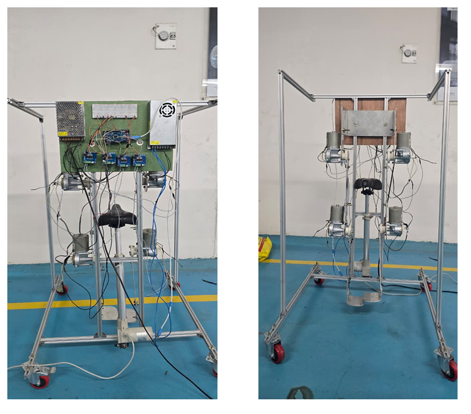

PROJECT 01
Pediatric Lower Limb Exoskeleton
Developed a biologically inspired lower-limb exoskeleton for pediatric gait rehabilitation with hip and knee actuation.
MECHATRONICS ENGINEER
M.E. Mechatronics Engineering
MIT, Anna University
Interested in Robotics, Automation, R&D, Mechatronics, and Engineering Application roles.
ABOUT ME
I am a Mechatronics Engineer with an M.E. in Mechatronics Engineering from MIT, Anna University.
My interests include Robotics, Automation, Mechatronics, R&D, and Engineering Application roles. I am interested in applying multidisciplinary engineering concepts to practical engineering problems.
I am currently seeking an entry-level opportunity where I can contribute to an engineering team, develop practical industry experience, and grow as a Mechatronics Engineer.
M.E. Mechatronics Engineering
MIT, Anna UniversityRobotics • Automation
R&D • Application EngineeringTECHNICAL SKILLS
FEATURED PROJECTS

PROJECT 01
Developed a biologically inspired lower-limb exoskeleton for pediatric gait rehabilitation with hip and knee actuation.
PROJECT 02
Developed a ball-balancing system using ultrasonic sensors, servo motors, and PID control, with MATLAB Simulink and Simscape Multibody analysis.
PROJECT 03
Designed and fabricated a human hand-mimicking robotic arm for pick-and-place operation using MPU6050 sensing, Arduino UNO, and forward kinematics.
INTERNSHIP EXPERIENCE
TI Clean Mobility Private Limited
Contributed to body-shop process optimization through cycle-time analysis, with a focus on improving assembly-line productivity.
EDUCATION
POSTGRADUATE
Madras Institute of Technology, Anna University, Chennai
CGPA: 8.30 / 10UNDERGRADUATE
Sri Krishna College of Engineering and Technology, Coimbatore
CGPA: 8.76 / 10HIGHER SECONDARY
SPV Matric Hr. Sec. School, Madurai
78.7%SECONDARY
SPV Matric Hr. Sec. School, Madurai
92%CONTACT
I am currently seeking opportunities in Mechatronics, Robotics, Automation, R&D, and Engineering Application roles.